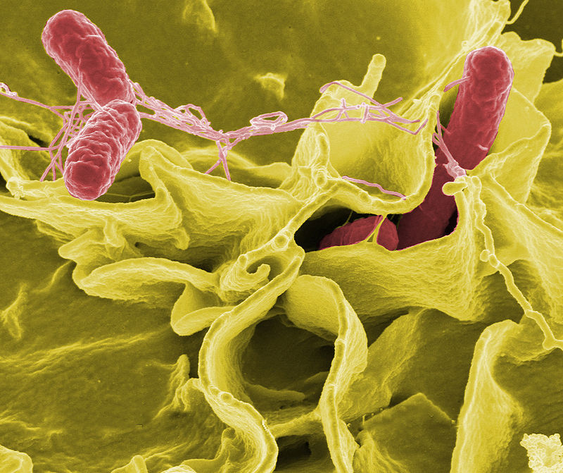

Foodborne illness, commonly called "food poisoning", is caused by bacteria, toxins, viruses, parasites, and prions. Roughly 7 million people die of food poisoning each year, with about 10 times as many suffering from a non-fatal version.The two most common factors leading to cases of bacterial foodborne illness are cross-contamination of ready-to-eat food from other uncooked foods and improper temperature control. Less commonly, acute adverse reactions can also occur if chemical contamination of food occurs, for example from improper storage, or use of non-food grade soaps and disinfectants. Food can also be adulterated by a very wide range of articles (known as "foreign bodies") during farming, manufacture, cooking, packaging, distribution, or sale. These foreign bodies can include pests or their droppings, hairs, cigarette butts, wood chips, and all manner of other contaminants. It is possible for certain types of food to become contaminated if stored or presented in an unsafe container, such as a ceramic pot with lead-based glaze.
Food poisoning has been recognized as a disease since as early as Hippocrates. The sale of rancid, contaminated, or adulterated food was commonplace until the introduction of hygiene, refrigeration, and vermin controls in the 19th century. Discovery of techniques for killing bacteria using heat, and other microbiological studies by scientists such as Louis Pasteur, contributed to the modern sanitation standards that are ubiquitous in developed nations today. This was further underpinned by the work of Justus von Liebig, which led to the development of modern food storage and food preservation methods.In more recent years, a greater understanding of the causes of food-borne illnesses has led to the development of more systematic approaches such as the Hazard Analysis and Critical Control Points (HACCP), which can identify and eliminate many risks.
Recommended measures for ensuring food safety include maintaining a clean preparation area with foods of different types kept separate, ensuring an adequate cooking temperature, and refrigerating foods promptly after cooking.
Foods that spoil easily, such as meats, dairy, and seafood, must be prepared a certain way to avoid contaminating the people for whom they are prepared. As such, the rule of thumb is that cold foods (such as dairy products) should be kept cold and hot foods (such as soup) should be kept hot until storage. Cold meats, such as chicken, that are to be cooked should not be placed at room temperature for thawing, at the risk of dangerous bacterial growth, such as Salmonella or E. coli.
Allergies
Some people have allergies or sensitivities to foods which are not problematic to most people. This occurs when a person's immune system mistakes a certain food protein for a harmful foreign agent and attacks it. About 2% of adults and 8% of children have a food allergy. The amount of the food substance required to provoke a reaction in a particularly susceptible individual can be quite small. In some instances, traces of food in the air, too minute to be perceived through smell, have been known to provoke lethal reactions in extremely sensitive individuals. Common food allergens are gluten, corn, shellfish (mollusks), peanuts, and soy. Allergens frequently produce symptoms such as diarrhea, rashes, bloating, vomiting, and regurgitation. The digestive complaints usually develop within half an hour of ingesting the allergen.
Rarely, food allergies can lead to a medical emergency, such as anaphylactic shock, hypotension (low blood pressure), and loss of consciousness. An allergen associated with this type of reaction is peanut, although latex products can induce similar reactions.Initial treatment is with epinephrine (adrenaline), often carried by known patients in the form of an Epi-pen or Twinject.
Other health issues
Human diet was estimated to cause perhaps around 35% of cancers in a human epidemiological analysis by Richard Doll and Richard Peto in 1981. These cancer may be caused by carcinogens that are present in food naturally or as contaminants. Food contaminated with fungal growth may contain mycotoxins such as aflatoxins which may be found in contaminated corn and peanuts. Other carcinogens identified in food include heterocyclic amines generated in meat when cooked at high temperature, polyaromatic hydrocarbons in charred meat and smoked fish, and nitrosamines generated from nitrites used as food preservatives in cured meat such as bacon.
Anticarcinogens that may help prevent cancer can also be found in many food especially fruit and vegetables. Antioxidants are important groups of compounds that may help remove potentially harmful chemicals. It is however often difficult to identify the specific components in diet that serve to increase or decrease cancer risk since many food, such as beef steak and broccoli, contain low concentrations of both carcinogens and anticarcinogens. There are many international certifications in cooking field.